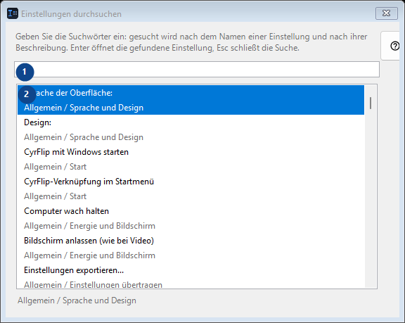
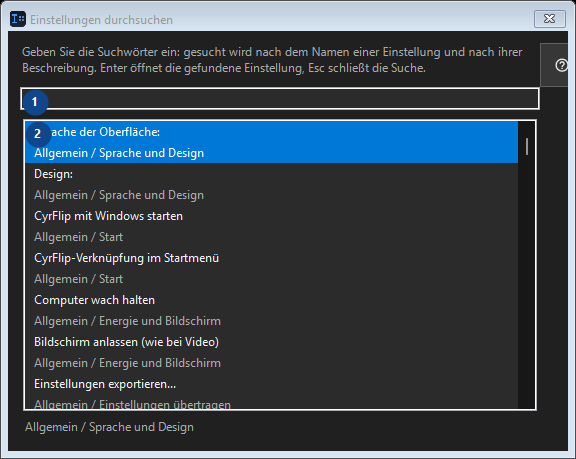

Einstellungen durchsuchen
Zweck
Lesen Sie die nummerierten Erklärungen, wählen Sie die benötigten Werte und fahren Sie mit dem Fensterbefehl fort.


Reihenfolge
Lesen Sie die nummerierten Erklärungen, wählen Sie die benötigten Werte und fahren Sie mit dem Fensterbefehl fort.
Elemente
1. Einstellungen durchsuchen
Wählen Sie den Wert zur benachbarten Beschriftung oder geben Sie ihn ein. Prüfen Sie ihn vor dem Fortfahren.
Ihre Tastenkürzel2. Geben Sie die Suchwörter ein: gesucht wird nach dem Namen einer Einstellung und nach ihrer Beschreibung. Enter öffnet die gefundene Einstellung, Esc schließt die Suche.
Dieser Bereich zeigt den aktuellen Inhalt oder Status. Wählen Sie einen Eintrag zur Bearbeitung.
Ihre Tastenkürzel